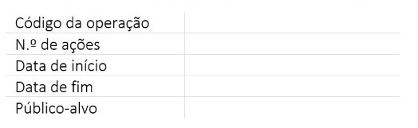

Capítulo 2 Introdução
2.1 Problematização
O combate ao abandono escolar precoce, e ao insucesso escolar mais genericamente compreendido, foi assumido como uma das principais prioridades educativas a considerar pela União Europeia durante o quadro financeiro plurianual 2014 – 2020 (Nóvoa, 2013). Portugal, aliás, apresentava preocupantes taxas de abandono escolar precoce, tendo posteriormente trilhado uma evolução notável. O Programa Nacional de Promoção do Sucesso Escolar (PNPSE), criado em 2016, propõe várias ações de combate ao insucesso, quer cofinanciadas (como os PIICIE e os TEIP), quer não cofinanciadas (tais como os Planos de Ação Estratégica dos Agrupamentos). Tal como estabelece desde logo a Resolução do Conselho de Ministros n.º 23/2016, que oficializa o PNPSE, o programa assenta
“no princípio de que são as comunidades educativas quem melhor conhece os seus contextos, as dificuldades e potencialidades, sendo, por isso, quem está melhor preparado para encontrar soluções locais e conceber planos de ação estratégica, pensados ao nível de cada escola, com o objetivo de melhorar as práticas educativas e as aprendizagens dos alunos”
Estes princípios têm já vindo a orientar a formulação de instrumentos de política educativa local, designadamente Cartas Educativas e Planos Estratégicos Educativos Municipais (Decreto-Lei n.o 7/2003, de 15 de janeiro; Decreto-Lei n.o 72/2015, de 11 de maio; Decreto-Lei n.o 21/2019, de 30 de janeiro), cuja componente de monitorização tem também vindo a ser promovida. O exercício a que este trabalho se propõe surge, justamente, na sequência do envolvimento de parte da equipa em tais projetos, junto de municípios portugueses, assim tendo já conhecimento prévio de alguns desafios.
Não obstante, a proposta deste projeto, feita em sede de candidatura, contemplava um empreendimento mais ambicioso do que aquele que foi possível concretizar, muito por via das limitações associadas aos dados disponíveis. Assim, conquanto o relatório cumpre o propósito de apresentação de uma “proposta de avaliação para além da parametrização do sucesso”, não demonstra a monitorização, uma vez que o caso de estudo selecionado (o PIICIE de Santa Maria da Feira) teve o seu término a 31 de dezembro de 2021, pouco depois do início do presente projeto. Focando a avaliação, este caso de estudo foi fulcral para identificar os desafios e as oportunidades que surgem ao longo do processo de avaliação de um programa cofinanciado de promoção do sucesso escolar. Considera-se, no entanto, que a “avaliação para além da parametrização do sucesso” foi cumprida na medida do possível, uma vez que foram encetados vários esforços de detalhada caracterização, quer do território, quer das ações enquadradas pelo PIICIE municipal.
O trabalho foi enriquecido com metodologias de análise e tratamento estatístico que, ainda que não contempladas na memória descritiva da candidatura, constituem propostas de investigação quer sobre o insucesso escolar, quer sobre os cofinanciamentos na promoção do sucesso.
Por fim, procurando propor medidas e caminhos atenuadores de duas grandes fragilidades identificadas nestes processos, os principais outputs do projeto são:
- A construção de painéis de informação que permitam apresentar, de forma tão interativa quanto possível, o desempenho educativo no território considerado e a caracterização das ações implementadas, assim procurando melhorar a transparência e divulgação dos PIICIE, numa lógica integrada face à realidade educativa;
- A elaboração de policy recommendations, decorrentes de todo o processo subjacente a este projeto, e que permitam construir alguma aprendizagem que seja mobilizada para os futuros programas de promoção do sucesso escolar.
Ainda que, neste âmbito, a proposta para o Programa Demografia, Qualificações e Inclusão apenas mencione o Plano 21|23 Escola+ (Portugal 2030, 2022, p. 56), será recomendável a formulação de outras medidas no período de vigência do atual quadro comunitário, tais como os Planos Intermunicipais de Promoção do Sucesso Escolar (CCDR-Centro, 2022; CCDR-Norte, 2022).
Deve partir-se para a leitura do restante relatório com a consciência de que, não obstante a pretensão demonstradora, o projeto tem como maior força o seu caráter propositivo. Aliás, o reforço da componente propositiva surge como compensação face à impossibilidade (muito por via da indisponibilidade de dados e do impacto pandémico) de demonstração rigorosa da metodologia. Deste modo, considera-se que do projeto resultam, fundamentalmente, 4 principais áreas de proposta:

FIGURA 1: Diálogo proposto entre Painéis de Informação, Indicadores de Avaliação e Recomendações na implementação de estratégias de monitorização do (in)sucesso escolar - FONTE: GETIN-UA
2.2 Metodologia
Este projeto adota, ainda assim, uma metodologia que parte de indicadores mais genéricos (associados aos indicadores de resultado e realização dos Programas Operacionais) e propõe indicadores específicos para as ações. Procura privilegiar-se a territorialização e contextualização dos indicadores, ainda que partindo daqueles mais padronizados. A informação será apresentada através de painéis que surgem como exemplificativos de uma estratégia de tratamento e apresentação de dados que permita situar o território (face a outras unidades territoriais) e caracterizá-lo, do ponto de vista da implementação deste projeto específico (o PIICIE). Idealmente, a construção dos dashboards seria feita por meio da interoperabilidade de sistemas, assumindo que a informação a preencher pelas escolas (quer para a tutela, quer para a autoridade de gestão dos fundos comunitários) pode ser mobilizada, ao invés de multiplicada.
2.2.1 Construção dos dashboards
Para Wickhan e Grolemund (2019, p. 473), dashboards são uma maneira favorável de comunicar grandes quantidades de informação visualmente e rapidamente. Gartner (2020, p. 1) destaca que os dashboards agregam indicadores de desempenho (KPIs), tornando possível serem utilizados rapidamente por todos os utilizadores antes de uma eventual exploração adicional através de ferramentas de análise. Os dashboards apresentam a informação combinando texto e opções gráficas num painel. Na maiorias das vezes, são as opções gráficas que acabam por se destacar, pois, comunicam a informação de forma mais inteligível.
Na etapa de tratamento e análise de dados, que precede a construção dos dashboards, utilizou-se o software estatístico R. Este software é uma linguagem e ambiente para computação estatística e representação visual da informação tratada, permitindo aplicar uma ampla variedade de métodos (e.g. modelação linear e não linear, testes estatísticos clássicos, análise de séries temporais, classificação, agrupamento). Para a construção dos dashboards utilizou-se a ferramenta Microsoft Power BI. Segundo a informação disponível no sítio da Microsoft, o Power BI é uma coleção de serviços de software, aplicações e conectores que funcionam em conjunto para transformar as origens de dados não relacionadas em informações coerentes, visualmente envolventes e interativas. O Power BI permite ligar-se facilmente às origens de dados, visualizar e descobrir o que é importante, bem como partilhar os seus conteúdos com qualquer pessoa.
FIGURA 2: O ciclo da Ciência dos Dados - FONTE: Wickhan e Grolemund (2019)
A figura anterior apresenta as etapas dos processos de recolha, tratamento e análise de dados nacionais sobre o (in)sucesso escolar, numa perspetiva de utilização das ferramentas computacionais de maneira intercooperativa e multiplataforma. Grande parte dos dados disponibilizados para a análise estavam distribuídos em diversas plataformas eletrónicas, diferentes suportes de armazenamento de dados e estruturas de dados também elas distintas (fazer referência às mais importantes). Este formato não se mostrou ser o ideal para os objetivos do projeto, colocando desafios em diferentes etapas da sua concretização. Foi necessário um esforço adicional no tratamento de dados, de modo a transformá-los numa estrutura triangular, tanto para a construção de dashboards, quanto para a modelação matemática proposta.
2.2.2 Diagnóstico do (in)sucesso escolar
Tendências e padrões no sucesso
O diagnóstico de tendências e padrões ao nível do sucesso escolar foi desenvolvido tendo como objetivo último caracterizar o território de estudo – o município de Santa Maria da Feira (SMF). As análises produzidas nos diferentes capítulos dos dashboards refletem-se nos painéis de informação elaborados (2 painéis por capítulo). A caracterização do panorama educativo parte assim de uma visão geral do território nacional, para as regiões de referência de SMF, a Região Norte (NUTSII) e a Área Metropolitana do Porto (NUTS III), afunilando no contexto específico do município.
1. Capítulo I - Caracterização do panorama educativo nacional
O capítulo I desenvolve-se em torno do mapeamento do indicador de cofinanciamento (1º painel) e de uma análise de similaridades, que combina indicadores gerais de resultado com outros indicadores de caracterização socioeducativa relevantes na definição de clusters territoriais (2º painel).
O indicador de cofinanciamento foi incorporado no modelo seguindo critérios de distribuição dos recursos em M/€ correspondentes às operações PIICIE aprovadas, intermunicipais e municipais. Neste exercício foram considerados os valores alocados diretamente aos municípios, juntamente com o resultado do rácio dos recursos intermunicipais (NUTSIII). A incorporação no modelo segue a proporcionalidade de alunos em cada nível de ensino.
Já a análise de similaridades, ou de agrupamento, permitiu formar clusters territoriais, que decorrem do reconhecimento de semelhanças entre municípios de Portugal Continental, recorrendo até 4 indicadores de 2017/18 a 2019/20: i) total de alunos, ii) média das taxas de retenção e desistência (TRD), iii) equidade e iv) rácio entre cofinanciamento de operações PIICIE e total de alunos do ensino básico, ensino secundário em cursos científico-humanísticos (CCH) e em cursos profissionais (Prof.). Duas análises de similaridade foram realizadas, com representações gráficas que permitem confrontar as diferenças ao nível da formação dos clusters: a similaridade 1, que considera o total de alunos (eixo dos YY), a TRD (eixo dos XX) e a equidade (tamanho da bola); e a similaridade 2, que inclui os indicadores de cofinanciamento (eixo dos YY), da TRD (eixo dos XX) e da equidade (tamanho da bola).
A análise de similaridades pode ser entendida como um processo que permite descobrir relações existentes entre os exemplares de um conjunto de dados descritos por uma série de características (atributos descritivos). As análises realizadas pelos algoritmos que implementam estratégias para agrupamento procuram por similaridades ou diferenças entre exemplares, qualificadas através de medidas de distância (quanto menor for a distância entre dois exemplares, maior será a similaridade). Assim, exemplares similares serão associados a um mesmo grupo e exemplares dissimilares a grupos diferentes. No final de um algoritmo de agrupamento, uma estrutura será formada de maneira a que a similaridade intragrupos tenha sido maximizada e a similaridade intergrupos minimizada. Este estudo utiliza o k-means, que agrupa os dados em grupos de variância igual em relação aos pontos médios, chamados centróides (Silva, Peres e Boscarioli, 2021 & Sampaio, 2018).
2. Capítulo II - Caracterização do panorama educativo regional e local
Ao nível do capítulo II, duas análises estiveram na base da elaboração dos painéis de informação partindo dos indicadores gerais de resultado indicados no aviso de candidatura do PIICIE: i) uma análise regional dos municípios da Área Metropolitana do Porto (AMP), ao nível das Taxas de Níveis Negativos (TNN) a pelo menos uma disciplina e das Taxas de Retenção e Desistência (TRD) (1º painel); e ii) uma análise à escala local dos 9 Agrupamentos de Escolas (AE) do município de SMF (2º painel).
Para esta análise, foram utilizadas bases de dados estatísticos de diferentes instituições oficiais, que cobrem períodos distintos e com diferentes níveis de desagregação. Os dados relativos aos alunos com níveis negativos apenas estavam disponíveis para os 17 municípios da AMP (NUTSIII), de 2014/2015 a 2019/2020, desagregados por escola e para o 2º e 3º CEB. Já a informação relativa aos alunos retidos e desistentes, abrangiam todos os municípios da Região Norte (NUTSII), num total de 86 municípios, de 2014/2015 a 2018/2019, desagregada também por escola para todos os níveis do Ensino Básico e Secundário. No 1º painel, optou-se por modelar os dados e apresentar os indicadores apenas para os territórios da AMP, permitindo a respetiva análise e espacialização à escala da NUTSIII e seus municípios, numa perspetiva comparada. A espacialização dos dois indicadores gerais de desempenho é condicional às respetivas unidades temporais. Além dos dados da AMP, no 2º painel, é possível a análise e espacialização das TNN e TRD por AE do município de estudo e suas escolas.
HR – 1) descrição sucinta dos princípios metodológicos da análise estatística inicial:
- Taxas de retenção e desistência
- Taxas de níveis negativos a pelo menos uma disciplina.
A análise concentrou-se, principalmente, em dois indicadores: Níveis Negativos (NN) e Retenção e Desistência (RD). Foram utilizadas bases do governo central de Portugal, disponíveis em diferentes sítios oficiais. As estatísticas disponíveis cobrem períodos distintos e possuem diferentes de níveis de desagregação. A análise dos Níveis Negativos considerou os 17 municípios da Área Metropolitana do Porto, entre 2014/2015 a 2019/2020, desagregados por escola e para o 2º e 3º anos do Ciclo Básico. Já a Retenção e Desistência, cobrem a região Norte (NUTS-III), o que corresponde a 86 municípios, entre 2014/2015 a 2018/2019 e possuem desagregação dos dados para todos os anos escolares do Ciclo Básico e Secundário. Os indicadores foram analisados separadamente e, quando necessária a análise conjunta, seja para efeito de comparação ou modelagem, estes ficaram restritos às unidades espaço-temporais comuns que contemplavam os dois indicadores. Além dos dados da AMP, foram analisados os dados de Níveis Negativos e Retenção e Desistência do município de Santa Maria da Feira.
HR – 2) descrição sucinta dos princípios metodológicos da análise de similaridades: - Clusters fase 1: alunos c/Níveis Negativos, Retidos, Inscritos e c/ASE - Cluster fase 2: combinação de TRD (País?) + financiamentos + equidade
Análise de agrupamentos (clusterização)
Análise de agrupamento pode ser entendida como um processo que permite descobrir relações existentes entre os exemplares de um conjunto de dados descritos por uma série de características (atributos descritivos). Em geral, as análises realizadas pelos algoritmos que implementam estratégias para agrupamento buscam por similaridades ou diferenças entre exemplares, qualificadas por meio de medidas de distância (quanto menor for a distância entre dois exemplares, maior será a similaridade), tal que exemplares similares sejam associados a um mesmo grupo, e exemplares dissimilares, a grupos diferentes. Ao final da execução de um algoritmo de agrupamento, uma estrutura de grupo é formada de maneira que a similaridade intragrupos tenham sido maximizadas, e a similaridade intergrupos tenha sido maximizada. Este estudo utiliza o k-means, que agrupa os dados em grupos de variância igual com relação aos pontos médios, chamados centroides. (Silva, Peres e Boscarioli, 2021 & Sampaio, 2018). A formação dos clusters obedeceu a menor estrutura de dados comuns às variáveis consideradas na busca por similaridades.
Em uma etapa posterior, foram consolidados dados de todo o país da população estudantil, taxa de retenção e desistência e equidade, com o objetivo de identificar padrões entre as diversas regiões do país, ao considerar essas três variáveis. Estes dados estão desagregados por nível de ensino, ciclo de estudos, ano de escolaridade, NUTS II, NUTS III de 2013 e município.
Fatores de influência do sucesso
A análise de autocorrelação espacial foi aplicada aos municípios da Região Norte – NUTS II de referência do município de estudo – e contribuiu para a identificação de possíveis fatores de influência do sucesso escolar nesses territórios. De forma sucinta, a análise desenvolvida consiste em perceber a influência de municípios vizinhos no comportamento de uma determinada variável dependente num município específico e apurar quais os fatores que melhor permitem explicar o comportamento dessa variável – neste caso, foram analisadas as taxas de retenção e desistência. Através da linguagem de programação Python, foi possível realizar vários testes e modelar a dependência espacial das taxas de retenção e desistência por via de uma análise de regressão espacial.
A opção de analisar as taxas de retenção e desistência enquanto indicador geral de resultado dos PIICIE, na catação de possíveis fatores de sucesso, decorreu do facto da informação estar disponível para todos os municípios da Região Norte, enquanto para as taxas de níveis negativos a pelo menos uma disciplina só foi possível aceder a dados para os municípios da AMP com igual desagregação. A análise reporta a 2018/19, tendo sido realizada para o ensino básico (1º, 2º e 3º CEB) e secundário das escolas públicas agrupadas.1 Em municípios com mais de um agrupamento de escolas (AE), os dados foram agregados.
Na base da seleção das variáveis independentes, assumiu-se como critério chave a sua relevância para a leitura espacial, demográfica, socioeconómica e socioeducativa dos territórios a analisar, com desagregação até ao município. No total, foram consideradas 16 variáveis explicativas2:
- densidade populacional referente ao ano de 2021 (valores previstos) - 1 variável;
- percentagem de estabelecimentos de ensino ativos em cada nível (excluindo o ensino pré-escolar) face ao total no ano de 2019/20 – 4 variáveis;
- percentagem de indivíduos que completou o ensino secundário e o ensino superior face ao total de residentes em 2011 – 2 variáveis;
- poder de compra per capita registado em 2019 – 1 variável;
- indicador de equidade referente aos níveis de ensino básico e secundário (média entre o científico-humanísticos e profissional) – 4 variáveis;
- percentagem de alunos com ASE que concluíram os níveis de ensino básico e secundário (média entre o científico-humanísticos e profissional) nos anos previstos - 4 variáveis
Na Figura 1 esquematiza as três principais etapas da análise de autocorrelação espacial desenvolvida3:
1. a 1ª fase centrou-se no tratamento de dados e teve como objetivo recolher a informação essencial para a análise – as variáveis dependentes e independentes;
2. na 2ª fase o propósito passou por encontrar a melhor matriz de pesos através do cálculo do índice de Moran. A abordagem utilizada para a representação das interações espaciais incluiu o teste de três tipos de matrizes de pesos espaciais – matriz de distância de 100 km, matriz k-vizinhos mais próximos e matriz de Kernel – sendo estas matrizes de pesos baseadas em distâncias. As matrizes representam as interações espaciais entre diferentes objetos, neste caso entre os diversos municípios. Em particular, as matrizes de distância permitem definir as relações de vizinhança em função da distância entre os municípios. A matriz de distância de 100 km é um tipo de matriz de distância mais simples, tendo sido pré-estabelecido uma distância que irá funcionar como uma ordem de nível para a definição dos vizinhos. Na matriz k-vizinhos define-se exatamente o número de vizinhos mais próximos de cada município, ou seja, todos os municípios têm o mesmo número de vizinhos. A matriz Kernel é modulada por uma função de Kernel com determinadas propriedades, sendo que os pesos entre os municípios são baseados na sua distância. Em cada matriz foi calculado o índice de Moran geral e local para escolher a aquela que melhor traduzisse as interações espaciais entre os municípios da Região Norte. Com base no índice de Moran local, construiu-se também o diagrama de dispersão;
3. por fim, a 3ª fase consistiu em analisar a correlação entre as diferentes variáveis, dependentes (4 variáveis) e independentes/explicativas (16 variáveis), e chegar ao modelo que melhor permitisse inferir sobre as relações de influência e causalidade. Esta etapa compreendeu a elaboração de uma autocorrelação (anterior à análise de componentes principais) e a modelação das variáveis através de uma análise de componentes principais.
Para além da análise da correlação entre as variáveis, a análise de componentes principais permitiu a obtenção de um pequeno número de combinações lineares das 18 variáveis utilizadas que representem a maior parte da variabilidade dos dados. Este tipo de análise tornou-se útil para modelar a dependência espacial.
Foi possível aferir que quatro fatores seria o nº mais adequado para realizar a análise de componentes principais. Desta forma, analisando os resultados obtidos dos loadings, verifica-se que o fator 1 tem mais influência na variável relativa ao poder de compra, dado que o valor se encontra próximo de 1 ou de -1 (0,88). Algo semelhante ocorre com os restantes fatores, sendo que exercem mais influência nas variáveis relativas à percentagem de estabelecimentos do 2ºCEB ativos (0,60), equidade referente ao secundário (0,49) e percentagem de alunos com ASE que concluíram o 2ºCEB nos 3 anos (0,77), respetivamente. Estas quatro variáveis foram utilizadas na construção dos modelos testados.
É possível avaliar a presença de dependência espacial através de um vasto conjunto de modelos, sendo que se verificou qual seria o melhor modelo para cada um dos níveis de ensino. Assim, assume-se que o melhor modelo para todos os níveis de ensino é o modelo OLS, dado que ao realizar este modelo nenhum multiplicador de Lagrange (LM-Error e LM-Lag) têm significância devia às fracas autocorrelações observadas entre as variáveis desfasadas e o desvio padrão de cada nível de ensino.
2.2.3 Desconstrução do PIICIE de SMF

O PIICIE de Santa Maria da Feira surge em resposta ao aviso de candidatura XXXXX. Recorrendo ao jargão europeu, na sequência desta candidatura foi financiada uma única operação que, por sua vez, se desdobra em várias ações. Por oposição, há outras entidades beneficiárias que gerem um PIICIE cujas ações correspondem a diferentes operações cofinanciadas.
Em Santa Maria da Feira, cada uma das 6 ações compreendidas na operação cumpre um propósito distinto e enquadra-se em diferentes domínios temáticos. Esta diversidade deve ser tida em conta aquando da formulação de indicadores que devem combinar a transversalidade com a especificidade.
Em jeito introdutório, cada uma das ações do PIICIE de Santa Maria da Feira pode ser resumida através de uma palavra ou expressão, algumas remetendo para os princípios subjacentes, outras para os domínios temáticos:
Por outro lado, há ações que têm uma abrangência de público declaradamente alargada, como a Ação 2 – Vive as Férias ou, no limite, a Ação 3 – Observatório, cuja plataforma de consulta pública deveria ser visitada por todos os munícipes que assim desejassem. Por outro lado, a Ação 1 – Equipa Multidisciplinar compreende um rigoroso processo de seleção dos alunos a incluir nas atividades; a Ação 6 – Hora de Experimentar destina-se a alunos de apenas 4 dos 9 Agrupamentos de Escolas4.
2.2.4 Acessos, consulta e divulgação
HR – 1) descrição sucinta dos passos instrumentais para o acesso, consulta e divulgação dos trabalhos: Apresentação dos diretórios/instruções para consulta e divulgação dos dashboards Descrição dos passos para criação e disponibilização do relatório online.
[Disponibilização de arquivos compactado com o projeto completo, contendo: Dados originais, base de dados tratados, códigos em R utilizados no processo de ETL, do inglês Extract, Transform, Load (Extrair Transformar Carregar) e do modelo não supervisionado de Machine Learning (K-Means) para a formação de clusters, além de um arquivo desenvolvido em Power BI, este último, a conter, efetivamente, o dashboard. ]
As evidências reunidas, dada a informação desagregada à qual foi possível aceder, centram-se nos municípios da Região Norte e, em particular, da Área Metropolitana do Porto (AMP) – NUTS II e NUTS III de referência da unidade territorial de estudo, o município de Santa Maria da Feira. Encontram-se estruturadas em dois pontos: 1) análise estatística inicial dos indicadores gerais de resultado indicados no aviso de candidatura dos PIICIE e 2) análise de similaridades entre municípios (clusters territoriais) cruzando os indicadores gerais de desempenho e indicadores de caracterização socioeducativa.
HR – 1) descrição sucinta dos resultados com base na análise estatística inicial:
Taxas de retenção e desistência
Taxas de níveis negativos a pelo menos uma disciplina
[por fazer]
HR – 2) descrição sucinta dos resultados com base na análise de similaridades: Clusters fase 1: alunos c/Níveis Negativos, Retidos, Inscritos e c/ASE Cluster fase 2: combinação de TRD + financiamentos + equidade
[por fazer]
2.3 Possíveis fatores de influência
A análise aqui desenvolvida abrange os municípios da Região Norte e permite tecer algumas conclusões acerca da influência destas unidades espaciais no comportamento das taxas de retenção e desistência das unidades vizinhas. A identificação de associações espaciais entre os municípios decorreu da análise i) de matrizes de pesos (k-vizinhos mais próximos, de distância a 100km e de Kernel), ii) do cálculo do Índice de Moran para cada matriz (para avaliar a existência de autocorrelação espacial) e iii) da representação dos diagramas de dispersão de Moran e dos mapas LISA:
- O Índice de Moran é um indicador que permite aferir a semelhança geral entre regiões (neste caso, são considerados municípios). Quanto mais próximo de 1 for este índice, mais adequada será a utilização da matriz, devendo o seu nível de significância (p-sim) ser < 5%;
- Os diagramas de dispersão de Moran partem do cálculo do índice de Moran e, num referencial de 4 quadrantes, permitem visualizar a desfasagem espacial da variável das taxas de retenção e desistência (eixo dos y) e o desvio padrão desse mesma variável (eixo dos x). As autocorrelações (associações espaciais) positivas-fortes implicam semelhanças entre municípios vizinhos, as negativas-fortes traduzem dissemelhanças e as autocorrelações fracas refletem ausência de associação espacial:
Quadrante Alto-Alto (Q1): municípios e vizinhos com valores elevados da taxa de retenção e desistência; Quadrante Baixo-Alto (Q2): municípios com valores baixos e vizinhos com valores elevados da taxa de retenção e desistência; Quadrante Baixo-Baixo (Q3): municípios e vizinhos com valores baixos da taxa de retenção e desistência; Quadrante Alto-Baixo (Q4): municípios com valores elevados e vizinhos com valores baixos da taxa de retenção e desistência;

- Os mapas LISA traduzem espacialmente os resultados dos digramas de dispersão de Moran. As cores presentes, tanto no diagrama de dispersão de Moran como no mapa LISA, representam os quatro tipos de dependências relacionais entre vizinhos referidos anteriormente - vermelho: “High-High” (municípios e vizinhos com valores elevados da taxa de retenção e desistência); azul claro: “Low-High” (municípios com valores baixos e vizinhos com valores elevados da taxa de retenção e desistência); azul escuro: “Low-Low” (municípios e vizinhos com valores baixos da taxa de retenção e desistência); laranja: High-Low (municípios com valores elevados e vizinhos com valores baixos da taxa de retenção e desistência); cinza: municípios que não são significantes para a análise.
Na FIGURA 5 estão representados os diagramas de dispersão de Moran e os mapas LISA obtidos com a matriz de Kernel para o 1ºCEB e com a matriz k-vizinhos mais próximos para os restantes níveis de ensino, sendo que estas foram aquelas que se destacaram entre as matrizes de pesos calculadas, dado o Índice de Moran ter sido mais expressivo. As autocorrelações positivas e negativas podem ser fracas ou fortes. Neste sentido, é importante analisar o índice de Moran das matrizes selecionadas, de modo a perceber se este se encontra próximo de 1 (autocorrelações positivas e negativas fortes). Assim, as autocorrelações correspondentes 2ºCEB, 3ºCEB e Secundário são positivas fracas e no 1ºCEB a autocorrelação é negativa fraca, apresentando valores do Índice de Moran afastados de 1. Ainda na FIGURA 5 , encontra-se os mapas LISA e o mapeamento da variável dependente, a taxa de retenção e desistência de cada nível de ensino.
Como é possível deduzir através do mapa LISA relativamente à Taxa de Retenção e Desistência do 1ºCEB, Tarouca é assinalada como um município que apresenta valores elevados desta variável, ao contrário dos municípios vizinhos que têm valores baixos. Neste caso, o município não aparenta ser influenciado pelos valores apresentados pelos vizinhos, uma vez que estes têm um comportamento oposto.
Os municípios da Maia, do Porto e de Gondomar apresentam valores elevados de taxas de retenção e desistência do 2ºCEB, verificando-se uma influência evidente entre estes e os municípios vizinhos que apresentam igualmente valores elevados. Ainda relativamente a esta variável, Valpaços não é afetado pelos valores obtidos pelos vizinhos, sendo que este município apresenta valores elevados e os seus vizinhos não.
No 3ºCEB, verifica-se influência entre os municípios de Vila do Conde, Matosinhos, Maia, Porto e Gondomar e os seus vizinhos, pois todos apresentam valores elevando da taxa de retenção e desistência. Já Bragança tem um comportamento contrário aos seus vizinhos, obtendo valores baixos, enquanto os seus vizinhos têm valores altos. Os municípios de Ponte da Barca e Vila Verde, assim como os seus vizinhos, têm valores baixos da taxa de retenção e desistência do 3ºCEB.
Na taxa de retenção e desistência do secundário, Matosinhos, Porto e Gondomar são municípios que têm valores elevados, tal como os municípios à sua volta, verificando-se uma clara influência. O município de Celorico de Basto apresenta valores elevados, contrariamente aos valores da taxa de retenção e desistência apresentados pelos vizinhos. Miranda do Douro posiciona-se numa situação oposta a Celorico de Basto, pois apresenta valores baixos da taxa de retenção e desistência do secundário, enquanto os seus vizinhos têm valores elevados desta variável. Nestes dois municípios, é fácil de deduzir que não existe influência entre estes e os seus vizinhos.
Era interessante criar uma tabela para cada nível de ensino e listar os municípios por quadrante em função do tipo de autocorrelação. Para ser mais simples identificar.
O Município de SMF aparece sempre a cinza. Refletir a respeito.
JM: Apesar de se encontrar a cinza, isto é, não é significante para a análise, uma vez que, como está acima referido para a TRD do 2ºCEB, 3º CEB e Secundário, grande parte dos municípios da AMP estão a vermelho, isto é, são municípios que têm valores elevados e os seus vizinhos também. Desta forma, pode deduzir que pelo menos para estes níveis de ensino, SMF apresenta valores elevados.
De forma a identificar possíveis fatores de influência relativamente à taxa de retenção e desistência de cada nível de ensino, adicionou-se à análise anteriormente mencionada um conjunto de variáveis. Assim, foi possível analisar a matriz de autocorrelação entre as taxas de retenção e desistência e as variáveis independentes/explicativas (FIGURA X). JM: Escolher qual a matriz que irá ficar!
Inserir legenda
JM: talvez acrescentar uma legenda para identificar o significado das variáveis?
Facilmente, se retira algumas conclusões acerca de quais as variáveis que têm uma maior influência nas variáveis dependentes, as taxas de retenção e desistência. Todas as variáveis dependentes (TRD_1CEB, TRD_2CEB, TRD_3CEB, TRD_SEC) apresentam grande nível de correlação com a densidade e com o poder per capita. De salientar que também existe uma correlação evidente entre as taxas de retenção e desistência do 2ºCEB, 3ºCEB e secundário. Estas variáveis também apresentam maior correlação com percentagem de indivíduos que completou o ensino secundário e o ensino superior.
A variável da taxa de retenção do 1ºCEB, 2ºCEB e 3ºCEB têm uma correlação evidente com a percentagem de estabelecimentos de ensino ativos no 1ºCEB. Ainda é possível verificar que a taxa de retenção do 2ºCEB, 3ºCEB e secundário estabelecem uma correlação alta com a percentagem de alunos com ASE que concluíram o 2ºCEB nos 3 anos e com a equidade referente ao 2ºCEB.
Para consulta da respetiva fonte, ver Quadro 1.↩︎
A informação utilizada tem origem em bases de dados abertas do PORDATA (variáveis recolhidas – densidade populacional, nº de estabelecimentos de ensino ativos em cada nível, população que completou o ensino secundário e o ensino superior, poder de compra per capita) e Infoescolas (variáveis recolhidas – equidade e percentagem de alunos com ASE que concluíram os níveis de ensino básico e secundário nos anos previstos). Para maior detalhe sobre os indicadores de equidade e alunos com ASE, ver o Quadro 2.↩︎
Para maior detalhe, consultar o ponto 2.3.↩︎
Sublinhe-se, desde já, que a Hora de Experimentar foi alargada aos restantes Agrupamentos de Escolas, ainda que sem cofinanciamento europeu, sendo as despesas assumidas pela autarquia.↩︎